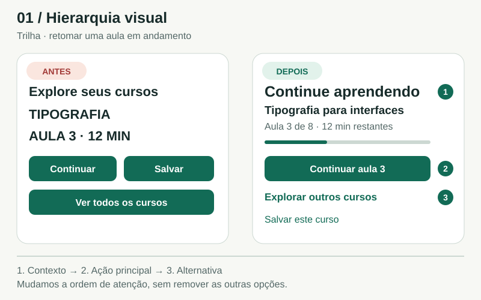

Guia profissional ilustrado / Edição 2026
Interfaces claras.
Decisões conscientes.
Fundamentos de UI mobile para transformar princípios em interfaces que fazem sentido.
O design aparece na decisão.
Uma tarefa.
Uma hierarquia.
Compare escolhas visuais no Trilha, um app fictício de cursos.
Explorar o primeiro exemplo →
Um repertório.
Cinco perspectivas.
37 temas, 37 exemplos originais.
Da composição à validação.
Fundamentos visuais e arquitetura da informação
↗02 5 temasAcessibilidade, medidas e legibilidade
↗03 8 temasProjetar um app de ponta a ponta
↗04 10 temasAs 10 heurísticas de Nielsen na prática
↗05 6 temasLeis e modelos de usabilidade sem mitos
↗Um guia de formação e consulta para projetar interfaces mobile claras, consistentes e acessíveis. São 37 temas em 5 capítulos, cada um com fundamento, aplicação e exemplo visual original. O foco é entender decisões e trade-offs, não decorar regras.
Caso de estudo: Trilha, um app fictício de cursos. A pessoa explora conteúdos, salva um curso, inicia uma aula e retoma o aprendizado. As comparações isolam princípios; não representam resultados medidos de pesquisa nem certificam conformidade de um produto.
Edição: 16 de outubro de 2026. Fontes consultadas nessa data; guias de plataforma são documentos vivos.
01 / Fundamentos visuais e arquitetura da informação
Hierarquia visual: decidir o que merece atenção
Hierarquia visual é a ordem de importância que a interface torna perceptível. No Trilha, uma pessoa com uma aula em andamento precisa reconhecer o curso, entender de onde retomar e agir. A tela deve refletir essa sequência. O maior elemento não precisa ser o logotipo, e o primeiro conteúdo não precisa ser o que a empresa mais quer promover.
Da ideia à interface
Como aplicar
Escreva a tarefa principal em uma frase. Numere os três elementos que deveriam ser percebidos primeiro. Faça uma versão em tons de cinza para investigar dependência de cor e uma visualização reduzida para avaliar massas de destaque. Depois, mostre a tela por poucos segundos e pergunte o que a pessoa pode fazer ali. Complete com um teste de tarefa: conseguir retomar a aula importa mais que apenas lembrar o botão.
Aprofundar o tema +
Princípios em prática
- Comece pela tarefa e pelo estado. Na primeira visita, “Explorar cursos” pode liderar; para quem já estuda, “Continuar aula 3” costuma ser uma hipótese mais útil. Diferentes estados podem exigir hierarquias diferentes, mantendo o sistema visual.
- Combine sinais em vez de aumentar tudo: posição, tamanho, peso, contraste e espaço ao redor. Reserve o contraste mais forte para a decisão prioritária; título, progresso e ação devem formar uma sequência reconhecível.
- Diferencie importância de legibilidade. Metadados podem ser menores ou menos pesados, mas precisam continuar legíveis. Um cinza quase invisível não resolve competição visual; apenas torna a informação difícil de usar.
- Mantenha alternativas encontráveis. “Salvar” e “Explorar outros cursos” podem ter tratamento secundário, sem desaparecer. Em telas de comparação, várias opções equivalentes merecem peso semelhante; nem toda tela precisa de um botão dominante.
Dica de projeto
Reduza o destaque de um concorrente antes de aumentar o elemento principal. Muitas vezes, remover um fundo colorido de “Salvar” resolve mais que ampliar “Continuar”.
Erro comum
Tratar cada pedido de negócio como prioridade visual. Quando banner, promoção, curso, progresso e três botões gritam juntos, a interface transfere a decisão de prioridade para a pessoa.
Experimente
Redesenhe a mesma tela para dois estados: primeira visita e curso em andamento. Defina a ordem de atenção de cada um e teste “encontre um curso” e “retome sua aula”. Compare primeiro toque, hesitações e conclusão; registre o motivo de cada diferença.
Referências deste tema
Exemplo didático · Trilha, app fictício
01 / Fundamentos visuais e arquitetura da informação
Composição: alinhamento, equilíbrio e ritmo
Compor é distribuir conteúdo, controles e espaço para que a tela funcione como um conjunto. Alinhamento cria eixos de leitura; equilíbrio distribui peso visual; ritmo torna previsível a repetição. No catálogo do Trilha, um padrão estável de título, duração e ação permite comparar cursos sem reaprender cada linha.
Da ideia à interface
Como aplicar
Trace os eixos principais sobre a tela e conte quantos alinhamentos independentes existem. Reduza os que não explicam uma relação. Padronize uma linha de curso e teste cinco itens com comprimentos diferentes. Observe se a pessoa consegue comparar duração e nível sem procurar cada atributo de novo. Use leitura em voz alta e ampliação de texto para identificar dependências frágeis de posição.
Aprofundar o tema +
Princípios em prática
- Alinhe elementos que pertencem ao mesmo percurso: título da página, busca e início da lista podem compartilhar uma margem. Use linhas de base para textos vizinhos. Alinhamento de caixas não garante alinhamento óptico de ícones ou letras.
- Equilíbrio pode ser assimétrico. Uma imagem intensa ocupa mais atenção que uma área neutra de tamanho equivalente. Compense peso por espaço, posição e contraste, sem exigir metades idênticas.
- Crie ritmo com unidades repetidas: mesma ordem de atributos, intervalos e proporção de miniaturas. Introduza uma exceção apenas quando houver significado, como “Próxima aula”; não alterne estilos para deixar a lista artificialmente variada.
- Decida onde quebrar o padrão. Um aviso de download interrompido merece destaque, mas deve manter o alinhamento e a linguagem dos componentes. Quanto mais frequentes as exceções, menos valor informativo elas têm.
- Adapte a composição ao conteúdo real. Títulos com duas linhas, cursos sem imagem e texto ampliado não devem deslocar ações imprevisivelmente. Um layout que só funciona com a amostra mais curta ainda não está resolvido.
Dica de projeto
Se uma tela parece “torta”, examine primeiro a massa das imagens, o comprimento dos textos e os espaços. Acrescentar simetria pode ocultar a causa e prejudicar a leitura.
Erro comum
Centralizar blocos longos de texto porque o resultado parece equilibrado no mockup. O início variável das linhas dificulta seguir a leitura, especialmente em listas e descrições.
Experimente
Monte seis cursos com títulos curtos e longos. Faça uma composição com alinhamentos livres e outra com um eixo principal e um eixo de metadados. Peça que alguém encontre o curso mais curto de nível iniciante; observe o percurso e as correções de leitura.
Exemplo didático · Trilha, app fictício
01 / Fundamentos visuais e arquitetura da informação
Gestalt: tornar relações visíveis
As pessoas não leem uma interface como uma lista de objetos isolados. Elas percebem conjuntos, sequências e camadas. Os princípios da Gestalt ajudam a prever esses agrupamentos. Use-os para que a organização percebida corresponda à organização funcional: a duração pertence àquele curso, o botão atua naquele cartão e o diálogo está acima da tela.
Da ideia à interface
Como aplicar
Primeiro desenhe o agrupamento sem caixas e teste proximidade. Acrescente região comum somente onde houver ambiguidade. Depois verifique se cores, formas e alinhamentos contam a mesma história. Peça à pessoa que indique quais informações pertencem a cada curso e o que acontecerá ao tocar em uma ação. Erros de associação revelam problemas que uma avaliação estética costuma ignorar.
Aprofundar o tema +
Princípios em prática
- Proximidade e semelhança: elementos próximos tendem a ser agrupados; características visuais compartilhadas também sugerem relação. Mantenha “8 aulas” perto do título correto e use a mesma aparência para ações equivalentes. Não dê a um selo decorativo a aparência de um botão.
- Região comum: um fundo ou contorno pode unir título, imagem, progresso e ação no mesmo cartão, mesmo quando há espaço entre eles. Use essa força quando o agrupamento for ambíguo; caixas dentro de caixas aumentam ruído e podem sugerir relações inexistentes.
- Continuidade: elementos alinhados em um percurso sugerem uma sequência. No Trilha, uma linha liga aulas de um módulo. A direção visual deve concordar com a ordem de leitura e de foco, sem depender de setas decorativas para explicar um fluxo confuso.
- Fechamento: percebemos uma forma inteira a partir de partes incompletas. Pode enriquecer uma ilustração ou indicador, mas não justifica recortar palavras, esconder controles ou usar ícones ambíguos. O significado funcional precisa sobreviver sem adivinhação.
- Figura–fundo: contraste, sobreposição e camadas distinguem o foco do contexto. Um diálogo pode trazer uma decisão para a frente e atenuar o restante. A separação visual deve acompanhar comportamento real de foco e interação; apenas escurecer o fundo não cria um modal acessível.
Dica de projeto
Quando dois princípios entram em conflito, a percepção pode divergir da intenção. Uma borda envolvendo itens próximos de outros grupos pode “vencer” o espaçamento. Revise o conjunto, não cada regra isoladamente.
Erro comum
Aplicar um princípio como fórmula automática: aproximar tudo, colorir tudo da mesma cor ou cercar todo conteúdo. Agrupar corretamente implica também separar o que não pertence ao mesmo conjunto.
Experimente
Crie dois cartões com título, duração, progresso e Salvar. Desorganize apenas os intervalos e teste a associação dos metadados. Corrija com proximidade; em seguida experimente uma região comum e compare qual solução exige menos elementos sem perder clareza.
Exemplo didático · Trilha, app fictício
01 / Fundamentos visuais e arquitetura da informação
Tipografia: uma escala que continua legível
Tipografia é conteúdo com estrutura. Família, tamanho, peso, entrelinha e largura de composição influenciam leitura e personalidade. Não existe um tamanho mínimo universal que garanta uma boa interface: desenho da fonte, distância, resolução, contraste, idioma e preferências de ampliação mudam o resultado. A decisão precisa ser testada na plataforma e no contexto de uso.
Da ideia à interface
Como aplicar
Selecione cinco papéis e monte uma amostra com títulos curtos, títulos de duas linhas, descrição, preço ou duração e estados. Revise em um telefone real e no maior tamanho de texto suportado. Procure truncamento, sobreposição, botões cortados e perda de relação entre rótulo e controle. Valide compreensão e velocidade de leitura, não só a impressão de elegância.
Aprofundar o tema +
Princípios em prática
- Defina papéis antes de números: título de tela, título de curso, corpo, metadado e rótulo de ação. Uma escala pequena e coerente costuma ser mais controlável que dezenas de estilos. Nomeie pelo propósito, permitindo mudar valores sem mudar a semântica.
- Escolha uma família com os caracteres e pesos necessários, incluindo acentos do português. Examine distinções como I/l/1 e O/0, números, pontuação e aparência em telas reais. Uma fonte expressiva pode funcionar em títulos curtos e atrapalhar textos contínuos.
- Combine tamanho, peso e espaço entre blocos para criar hierarquia. Corpo não precisa ser leve para parecer refinado. Evite depender de caixa-alta em frases longas e de pesos finos para informação essencial.
- Ajuste entrelinha junto do tamanho e da largura. Linhas próximas podem se misturar; intervalos exagerados rompem o bloco. Para descrições, comece com uma configuração confortável da plataforma e refine com conteúdo real, sem tratar uma razão numérica como solução universal.
- Projete ampliação e reflow desde o início. Títulos devem poder quebrar e botões ganhar altura quando necessário. Na web, o critério WCAG 1.4.4 prevê redimensionamento de texto até 200%, com exceções definidas; em apps nativos, teste também os ajustes de texto da plataforma.
Dica de projeto
Registre o conjunto completo de cada estilo: família, peso, tamanho, entrelinha e uso. Para contadores que mudam, avalie números tabulares quando disponíveis, evitando deslocamentos incômodos.
Erro comum
Escolher uma fonte pela imagem promocional e resolver excesso de texto reduzindo o tamanho até caber. Isso transfere um problema de conteúdo e layout para a capacidade visual da pessoa.
Experimente
Crie o cartão “Tipografia para interfaces móveis e produtos digitais”. Teste texto padrão e ampliado, português e uma versão 30% mais longa. Ajuste a estrutura até preservar título, progresso e ação; documente o que quebra linha e o que pode ser abreviado.
Referências deste tema
Exemplo didático · Trilha, app fictício
01 / Fundamentos visuais e arquitetura da informação
Espaço em branco e densidade: reduzir esforço
Espaço em branco é a área não ocupada por conteúdo, mesmo em um fundo colorido. Ele organiza relações e sustenta legibilidade. Densidade é quanto conteúdo e quantas decisões aparecem em uma área. Uma tela esparsa não é automaticamente fácil; uma tela densa não é automaticamente ruim. O equilíbrio depende da tarefa, da frequência de uso e da necessidade de comparação.
Da ideia à interface
Como aplicar
Defina quais atributos são necessários para escolher um curso. Monte versões compacta e confortável com o mesmo conteúdo. Peça a participantes que comparem três opções e encontrem uma aula que caiba em dez minutos. Meça acertos, toques equivocados, necessidade de abrir detalhes e esforço de rolagem. Escolha a densidade pelo desempenho e contexto, não por uma preferência estética isolada.
Aprofundar o tema +
Princípios em prática
- Separe microespaçamento e macroespaçamento. O primeiro controla relações internas, como título e duração; o segundo separa cartões e seções. A diferença entre os dois informa o agrupamento com menos bordas.
- Use densidade para apoiar a tarefa. Em “Explorar”, comparar títulos, nível e duração pode justificar uma lista compacta. Em “Continuar”, uma ação e contexto claros podem valer mais que mostrar todos os cursos acima da dobra.
- Reduza informação antes de comprimir legibilidade. Retire metadados redundantes, simplifique rótulos e adie detalhes que não influenciam a decisão atual. Não esconda pré-requisitos ou condições essenciais apenas para deixar o cartão limpo.
- Preserve área de interação e conteúdo quando ajustar a densidade. Uma linha visualmente compacta pode manter uma área de toque generosa. Espaço para ler e espaço para tocar têm funções diferentes e precisam ser avaliados juntos.
- Evite vazios que parecem encerrar a página. Se houver mais cursos abaixo, a composição deve sugerir continuidade. Uma tela com um único cartão central e muito espaço pode fazer a pessoa concluir que a lista acabou.
Dica de projeto
Use uma escala pequena de espaços e dê significado aos intervalos: dentro do grupo, entre grupos e entre seções. Os valores podem mudar por componente, mas a relação deve continuar clara.
Erro comum
Confundir “premium” com áreas vazias enormes. Espaço sem função pode aumentar rolagem e afastar título da informação que explica; compactação excessiva pode produzir o problema oposto.
Experimente
Reorganize uma lista de seis cursos sem reduzir a fonte. Remova uma borda, aproxime os metadados do título e aumente a separação entre cursos. Teste se a associação ficou mais clara e registre o custo em altura total.
Referências deste tema
Exemplo didático · Trilha, app fictício
01 / Fundamentos visuais e arquitetura da informação
Grids e sistema de 8 pontos: consistência com flexibilidade
Um grid organiza alinhamentos; uma escala de espaçamento reduz decisões repetidas. São ferramentas relacionadas, mas diferentes. Um grid de colunas define como o conteúdo ocupa a largura disponível. Um sistema baseado em oito sugere intervalos reutilizáveis, como 8, 16, 24 e 32, com subdivisões quando úteis. Nenhum deles exige que toda medida da interface seja múltiplo de oito.
Da ideia à interface
Como aplicar
Comece com conteúdo real e uma tela compacta. Defina uma margem, uma escala curta e relações internas do cartão. Configure constraints ou auto layout, depois teste largura menor, largura maior e texto ampliado. Faça uma auditoria de valores: consolide diferenças acidentais e registre exceções justificadas. A consistência útil é a das relações, não apenas a da aritmética.
Aprofundar o tema +
Princípios em prática
- Defina margem externa, colunas e gutters conforme a largura e o conteúdo. Uma lista de uma coluna pode ser a melhor estrutura em telas compactas; cartões lado a lado exigem largura suficiente para manter títulos e controles legíveis.
- Use tokens para espaçamentos recorrentes: por exemplo, espaço interno pequeno, padrão e separação de seção. Evite acumular valores quase iguais sem motivo. Uma exceção deve ter função reconhecível, e não existir só porque o elemento foi arrastado manualmente.
- Trate oito como base, não como lei. Quatro pode atender relações mais próximas; bordas de uma unidade, ajustes ópticos e dimensões determinadas pelo conteúdo também são legítimos. A referência Material usa dp; “8pt” é um nome informal de método, não equivalência entre px físico, CSS px, pt e dp.
- Prefira alturas determinadas pelo conteúdo quando o texto puder crescer. Uma caixa de altura fixa que “fecha o grid” pode cortar títulos ampliados. Safe areas, barras do sistema e teclado também precisam participar das restrições.
- Faça o grid responder à janela. Preserve margens e largura de leitura coerentes ao mudar orientação ou usar janela redimensionada. Não estique o cartão de telefone indefinidamente para ocupar um tablet inteiro.
Dica de projeto
Quando uma medida excepcional se repete, investigue se ela deveria virar token ou se um componente foi estruturado incorretamente. Evite criar um token para cada número encontrado.
Erro comum
Forçar tipografia, ícones, altura de texto e largura de todo componente ao mesmo múltiplo. O resultado pode ser matematicamente uniforme e visualmente desalinhado, além de frágil a conteúdo dinâmico.
Experimente
Construa um cartão com espaçamentos 8, 16 e 24, permitindo 4 em uma relação estreita. Teste três larguras e dois tamanhos de texto. Liste cada exceção e explique por que protege leitura, toque ou alinhamento óptico.
Referências deste tema
Exemplo didático · Trilha, app fictício
01 / Fundamentos visuais e arquitetura da informação
Cor: um sistema de significado e estados
Cor cria identidade, hierarquia e feedback. Matiz descreve a família cromática; saturação, a intensidade; luminosidade, a aparência de claro ou escuro. Isso não substitui a luminância relativa usada no cálculo de contraste: duas cores com aparência igualmente intensa podem ter legibilidades muito diferentes. No Trilha, uma cor precisa ter um motivo além de “combinar”.
Da ideia à interface
Como aplicar
Monte uma matriz de componentes × estados × temas. Para cada célula, registre os tokens usados, verifique contraste e confirme que o significado sobrevive sem cor. No Trilha, teste reconhecer um curso salvo, identificar uma falha e retomar a aula. Use simuladores de diferenças de visão de cores como apoio, sem tratar a simulação como substituto de pessoas e medição.
Aprofundar o tema +
Princípios em prática
- Separe paleta de papéis. A paleta contém valores; os papéis descrevem uso: superfície, texto sobre superfície, ação principal, contorno, erro e sucesso. Os componentes consomem papéis, facilitando trocar tema sem editar cada botão.
- Defina pares, não cores isoladas. Botão e texto precisam funcionar juntos; o mesmo verde pode servir como preenchimento e falhar como texto pequeno sobre branco. Teste o contraste do par efetivamente renderizado, incluindo transparência e sobreposições.
- Projete estados: padrão, pressionado, foco quando aplicável, selecionado, carregando, indisponível e erro. “Salvar” e “Salvo” devem ter sinal claro além de uma troca sutil de tonalidade, como ícone e rótulo.
- Cor nunca deve ser o único canal de informação essencial. Um erro de download precisa de texto ou símbolo identificável; um progresso precisa de valor ou contexto. Na web, WCAG AA estabelece 4,5:1 para texto comum e 3:1 para texto grande nas condições do critério, com exceções específicas.
- No tema escuro, remapeie papéis e confira cada combinação. Inverter o branco e o preto não preserva hierarquia, conforto ou estados. Fundos, superfícies elevadas, contornos e acentos devem continuar distinguíveis; imagens e elementos de terceiros também precisam de revisão.
Dica de projeto
Dê nomes funcionais aos tokens sem esconder a relação com a paleta. “Texto de erro” explica o uso; “vermelho 600” explica o valor. Os dois níveis ajudam a manter o sistema.
Erro comum
Usar a mesma cor de destaque para ação, decoração, sucesso e aviso. A consistência de marca pode coexistir com funções diferentes; repetir um tom sem semântica reduz a capacidade de sinalizar o importante.
Experimente
Defina oito papéis cromáticos para o Trilha e aplique-os a um cartão, um formulário e um estado de erro. Produza temas claro e escuro. Registre os pares medidos e encontre qualquer estado que dependa apenas de cor para ser entendido.
Referências deste tema
Exemplo didático · Trilha, app fictício
01 / Fundamentos visuais e arquitetura da informação
Arquitetura da informação: tornar o conteúdo encontrável
Arquitetura da informação define como conteúdo e funções são organizados, nomeados e relacionados. A navegação é uma manifestação dessa estrutura; não é a estrutura inteira. No Trilha, cursos, aulas, temas, progresso e itens salvos precisam ter um lugar previsível. Antes de desenhar a barra inferior, esclareça o que existe, para quem e em quais situações precisa ser encontrado.
Da ideia à interface
Como aplicar
Inventarie cerca de vinte conteúdos representativos, incluindo casos ambíguos. Use card sorting para descobrir agrupamentos e vocabulário; transforme os achados em uma proposta editorial, sem copiar grupos automaticamente. Depois faça tree testing com tarefas como “encontre um curso que você guardou” e “retome a aula interrompida”. Analise sucesso, caminho direto e categorias equivocadas. Só então escolha os controles de navegação e teste a interface completa.
Aprofundar o tema +
Princípios em prática
- Faça um inventário e modele entidades. Curso contém aulas; tema e nível descrevem cursos; salvo e em andamento representam relações ou estados da pessoa com o curso. Misturar essas dimensões em uma lista única cria categorias sobrepostas e manutenção difícil.
- Construa uma taxonomia com critérios consistentes. “Design”, “Programação” e “Negócios” podem ser temas; “Iniciante” é nível; “Até 20 minutos” é duração. Use atributos como filtros quando eles atravessam vários temas, em vez de duplicar árvores inteiras.
- Escolha rótulos com vocabulário reconhecível e escopo previsível. “Salvos” indica melhor um destino do que “Minha área” quando o conteúdo é apenas uma lista guardada. Teste se a pessoa consegue antecipar o conteúdo sem abrir o item.
- Desenhe o sitemap para explicitar níveis, relações e pontos de entrada. Uma árvore não representa todos os caminhos possíveis: busca, recomendações e links contextuais podem levar ao mesmo curso. Preserve um destino canônico para evitar versões divergentes.
- Planeje busca junto com a estrutura. Defina campos indexados, sinônimos relevantes, filtros, ordenação, estado vazio e ausência de resultados. Pesquisar “UX” pode precisar encontrar “Experiência do usuário”, mas o mapeamento deve ser validado pelo catálogo e pela intenção real.
Dica de projeto
Uma mesma entidade pode ser acessada por diferentes rotas sem ser duplicada. Um curso pode aparecer em Explorar, Salvos e Continuar, mantendo identidade, progresso e detalhes consistentes.
Erro comum
Copiar o organograma da empresa ou criar categorias vagas para acomodar sobras. “Outros” e “Hub” frequentemente mascaram uma decisão de organização que ainda não foi tomada.
Experimente
Liste quinze cursos e suas aulas, temas, níveis e estados. Separe entidade, atributo e relação com a pessoa. Desenhe um sitemap enxuto e escreva cinco tarefas sem usar as palavras dos menus; teste se os destinos esperados são encontrados sem dicas.
Exemplo didático · Trilha, app fictício
02 / Acessibilidade, medidas e legibilidade
Unidades e medidas: projetar no sistema certo
A interface é desenhada em um espaço lógico e depois convertida em pixels pela plataforma. Separar dimensão de layout, escala de texto e resolução de imagem evita telas que encolhem em aparelhos densos ou ignoram as preferências de leitura. Um número sem unidade e plataforma deixa uma decisão importante em aberto.
Da ideia à interface
Como aplicar
Escolha primeiro o destino da tela. Anote a unidade ao lado de cada especificação. Em seguida, implemente um cartão de curso e compare dois aparelhos com densidades diferentes: dimensões lógicas devem preservar a intenção, enquanto o arquivo de imagem precisa ter resolução suficiente. Por último, aumente a fonte do sistema para verificar uma variável diferente da densidade.
Aprofundar o tema +
Princípios em prática
- Pixels físicos são pontos do display; CSS px, pt do iOS e dp do Android são medidas lógicas usadas em contextos distintos. Não escreva “16 px/pt/dp” como se fossem intercambiáveis. Especifique onde o valor será implementado.
- No Android, use dp para dimensões e espaçamento de layout; sp para o tamanho do texto. sp incorpora a preferência de fonte do usuário e não deve dimensionar margens gerais. Fonte: https://developer.android.com/training/multiscreen/screendensities
- No iOS, pontos de layout são convertidos em pixels pelo fator de escala. Um recurso raster de 100 × 100 px pode representar 50 × 50 pt em @2x; o tamanho visual especificado continua sendo 50 pt. Dynamic Type trata a escala do texto; exportar em @2x ou @3x trata a resolução do recurso. Fonte: https://developer.apple.com/documentation/quartzcore/calayer/contentsscale
- Na web, CSS px também não equivale necessariamente a um pixel físico. O pt do CSS tem a relação fixa 1 pt = 4/3 CSS px; esse pt não deve ser confundido com o ponto de coordenada do UIKit. Fonte: https://www.w3.org/TR/css-values-4/#absolute-lengths
- Para interpretar WCAG em software nativo, WCAG2ICT orienta usar medidas independentes de densidade da plataforma, como pt e dp. Essa publicação é uma orientação informativa, não uma norma de requisitos adicional. Fonte: https://www.w3.org/TR/wcag2ict-22/
- No handoff do Trilha, registre cada token com função e destino: espaçamento de cartão em dp ou pt, estilo de texto escalável e resolução das capas separadamente. Um frame no editor é uma representação, não a densidade física do aparelho.
Dica de projeto
Use tokens por intenção, como espaço entre grupos e texto de descrição, com mapeamentos próprios de cada plataforma. A aparência pode ser consistente sem reutilizar cegamente o mesmo número em toda tecnologia.
Erro comum
Medir uma captura de tela em pixels físicos e copiar esses números para o layout; compensar a fonte grande reduzindo-a; exportar uma capa em @3x e imaginar que isso muda sua dimensão de interface.
Experimente
Especifique o cartão “Design mobile” do Trilha para web, iOS e Android. Marque separadamente largura lógica, estilo de texto e tamanho de exportação da imagem. Explique a uma pessoa desenvolvedora por que uma capa de 50 × 50 pt pode precisar de 100 × 100 px em @2x.
Exemplo didático · Trilha, app fictício
02 / Acessibilidade, medidas e legibilidade
Touch targets: o tamanho que recebe o toque
O alvo de interação é toda a área que responde ao dedo, mouse ou caneta. Ele pode ser maior que o ícone visível. Dimensão, separação e ausência de sobreposição precisam ser avaliadas juntas: aumentar apenas o desenho não garante precisão nem define qual ação receberá um toque na fronteira.
Da ideia à interface
Como aplicar
Sobreponha uma camada de hit areas ao protótipo. Inspecione tamanho e interseções, inclusive em listas densas e barras fixas. Depois teste no aparelho com o polegar, nas bordas de cada alvo e com texto ampliado. Na implementação, confirme o elemento que recebe o toque e não apenas o retângulo desenhado no arquivo de design.
Aprofundar o tema +
Princípios em prática
- Android recomenda uma área focalizável/tocável de pelo menos 48 × 48 dp. Padding ou mecanismos apropriados de expansão podem preservar um ícone visual menor sem reduzir a região de interação. Fonte: https://developer.android.com/guide/topics/ui/accessibility/views/apps-views
- No iOS, adote 44 × 44 pt como referência prática de conforto ao toque. Apple UI Design Dos and Don’ts recomenda essa dimensão. A HIG atual distingue tamanho padrão de controle de 44 × 44 pt e mínimo de 28 × 28 pt; por isso, não chame 44 de mínimo universal de todo controle e contexto. Fontes: https://developer.apple.com/design/tips/ e https://developer.apple.com/design/human-interface-guidelines/accessibility
- Na web, WCAG 2.2 AA, critério 2.5.8, exige alvo de pelo menos 24 × 24 CSS px, com exceções previstas. Isso é um piso de conformidade com condições, não uma recomendação geral de conforto para todas as ações mobile.
- Na exceção de espaçamento da WCAG 2.5.8, círculos de 24 CSS px de diâmetro centrados nos alvos pequenos não podem interceptar outro alvo nem o círculo de outro alvo pequeno. Também existem exceções para controle equivalente, alvo em linha, tamanho definido pelo agente de usuário e apresentação essencial.
- WCAG 2.5.5, nível AAA, usa 44 × 44 CSS px e suas próprias exceções. Não confunda esse critério com o mínimo AA nem converta automaticamente suas medidas em pixels de uma captura. Fonte: https://www.w3.org/WAI/WCAG22/Understanding/target-size-enhanced.html
- No Trilha, Salvar, Baixar e Mais devem ter regiões de toque distintas, sem competir. Na imagem, o tracejado representa a área interativa, não uma borda obrigatória no produto. O diagrama é ilustrativo, não uma régua em escala física.
Dica de projeto
Reserve a área de toque antes de compactar a composição. Se três ações não cabem com precisão, reveja a distribuição ou a prioridade, em vez de reduzir todos os alvos.
Erro comum
Entregar ícones de 24 unidades como se a região clicável tivesse necessariamente o mesmo tamanho; sobrepor padding invisível de ações vizinhas; afirmar que 44 px é o requisito WCAG AA.
Experimente
Inspecione as ações do cartão de curso do Trilha. Desenhe e nomeie cada região que recebe toque. Escolha explicitamente iOS, Android ou web para a avaliação e justifique qualquer exceção, em vez de aplicar uma medida híbrida.
Exemplo didático · Trilha, app fictício
02 / Acessibilidade, medidas e legibilidade
Contraste: legibilidade que pode ser verificada
Contraste é uma relação entre cores que aparecem juntas, não uma qualidade isolada de uma cor da paleta. A avaliação precisa considerar o fundo real, transparências, imagens, tema e estado. Uma interface pode ser elegante e ainda esconder a informação secundária da qual a pessoa precisa para escolher uma aula.
Da ideia à interface
Como aplicar
Liste os pares por função: título/fundo, descrição/fundo, rótulo/botão, ícone/superfície e indicador de seleção/superfície. Meça cada par numa ferramenta confiável, registre o critério aplicável e revise o componente inteiro. Se aumentar o contraste, confirme que a hierarquia continua clara por tamanho, peso e espaço, sem depender de texto apagado.
Aprofundar o tema +
Princípios em prática
- WCAG 2.2 AA, 1.4.3: texto comum precisa de contraste de pelo menos 4,5:1 com seu fundo; texto grande, 3:1. Grande significa ao menos 18 pt CSS, ou 14 pt CSS em negrito, equivalentes a 24 CSS px e aproximadamente 18,67 CSS px. A definição não torna todo título automaticamente “grande”.
- Existem exceções para logotipos, texto decorativo, conteúdo incidental e componentes inativos. Uma descrição de curso, duração ou condição de acesso não vira decoração porque foi estilizada como informação secundária.
- WCAG 1.4.11 exige pelo menos 3:1 contra cores adjacentes para informação visual necessária à identificação de controles, seus estados e gráficos essenciais. Isso não obriga toda borda decorativa a contrastar, nem exige 3:1 entre cores de estados que nunca aparecem lado a lado. Fonte: https://www.w3.org/WAI/WCAG22/Understanding/non-text-contrast.html
- Não use só cor para indicar erro, seleção ou conclusão. Em uma aula concluída, combine cor com um ícone e/ou texto; numa falha, explique o problema. Fonte: https://www.w3.org/WAI/WCAG22/Understanding/use-of-color.html
- A medição deve usar as cores resultantes. Texto sobre imagem ou transparência exige verificar o trecho de fundo relevante, e não só comparar os dois tokens originais. Reavalie pares no modo escuro e em estados de interação.
- Na comparação ilustrada, o texto secundário #A8B1BC sobre branco tem aproximadamente 2,2:1; #475569 sobre branco, 7,6:1. Os valores são arredondados para leitura. Para decidir conformidade, compare o valor calculado sem arredondá-lo para cima.
Dica de projeto
Mantenha informação secundária menos proeminente por organização e peso visual. Hierarquia não exige deixar detalhes úteis difíceis de ler.
Erro comum
Aprovar a paleta sem medir os pares usados; usar opacidade como atalho universal para texto secundário; chamar 4,49:1 de 4,5:1 para aprovar; imaginar que cumprir contraste torna toda a experiência acessível.
Experimente
Meça título, duração, ação Continuar e ícone de conclusão de um curso no Trilha em tema claro e escuro. Para cada ajuste, registre as duas cores, o valor não arredondado e o critério usado. Acrescente uma indicação não cromática ao estado de conclusão.
Exemplo didático · Trilha, app fictício
02 / Acessibilidade, medidas e legibilidade
Escala de texto e Dynamic Type: o layout também cresce
A pessoa deve poder ler no tamanho que funciona para ela. Suportar fonte ampliada requer rever quebra de linha, altura, agrupamento e rolagem. O objetivo é manter o caminho de aprendizagem utilizável; diminuir a fonte para salvar a composição desfaz a preferência que a interface deveria respeitar.
Da ideia à interface
Como aplicar
Comece com título de curso longo, descrição real e ação com rótulo completo. Ative os tamanhos de acessibilidade do sistema ou o redimensionamento na web. Remova alturas fixas que cortem conteúdo, deixe grupos mudarem de orientação e confirme que a ação continua alcançável. Repita com o teclado aberto, sem tratar o estado padrão como única tela válida.
Aprofundar o tema +
Princípios em prática
- WCAG não estabelece um mínimo universal de corpo em 16 px. Contraste, ampliação e preservação de informação precisam ser atendidos. Um tamanho inicial de corpo é uma escolha de design a validar com a fonte, o idioma, a tarefa e a plataforma.
- A Apple apresenta 17 pt como tamanho padrão de texto para iOS/iPadOS e 11 pt como mínimo em sua tabela de tipos personalizados. O mínimo não é recomendação de corpo para leitura prolongada. Preferir estilos semânticos com Dynamic Type. Fonte: https://developer.apple.com/design/human-interface-guidelines/accessibility
- Material 3 fornece, entre outros estilos, bodyLarge de 16 sp com entrelinha de 24 sp, bodyMedium de 14/20 e bodySmall de 12/16. Esses tokens são opções do sistema tipográfico, não requisitos universais WCAG. Fonte: https://developer.android.com/develop/ui/compose/designsystems/material3
- No iOS, acompanhe Dynamic Type com contêineres flexíveis e, quando necessário, substitua arranjos horizontais por verticais. Permita que rótulos relevantes quebrem linha e que a tela role. Fonte: https://developer.apple.com/videos/play/wwdc2024/10074/
- No Android, sp incorpora a preferência de fonte. Android 14 introduziu ampliação não linear até 200%; teste a interface no maior tamanho, porque usar a unidade correta não elimina cortes e colisões. Fonte: https://developer.android.com/about/versions/14/features
- Na web, WCAG 1.4.4 AA exige ampliação até 200% sem perda de conteúdo ou funcionalidade, exceto legendas e imagens de texto. Teste também os incrementos intermediários. Não atribua esse número como limite máximo de acessibilidade do iOS.
- WCAG 1.4.12 não exige entrelinha padrão de 1,5 em todo texto. Em conteúdo com as propriedades suportadas, exige não haver perda quando o usuário aplica entrelinha 1,5 ×, espaço após parágrafo 2 ×, entre letras 0,12 × e entre palavras 0,16 × o tamanho da fonte. Fonte: https://www.w3.org/WAI/WCAG22/Understanding/text-spacing.html
- Ampliar texto e redistribuir conteúdo são testes diferentes. WCAG 1.4.10 AA pede reflow sem perda nem necessidade de rolagem em duas dimensões em largura equivalente a 320 CSS px para conteúdo de rolagem vertical, com exceções para partes que exigem disposição bidimensional. Não trate os 200% de texto como substituto desse teste. Fonte: https://www.w3.org/WAI/WCAG22/Understanding/reflow.html
Dica de projeto
Defina altura mínima quando o componente precisa de um alvo confortável, mas deixe o conteúdo determinar a altura final. Texto ampliado pode mudar a composição sem mudar a ordem da tarefa.
Erro comum
Congelar tamanho de fonte; reduzir automaticamente o texto para caber; aceitar reticências em informação essencial; testar apenas o maior tamanho e ignorar quebras em etapas intermediárias.
Experimente
No Trilha, amplie “Introdução ao design de interfaces” e a ação “Iniciar aula”. Crie uma versão em que o título permanece completo, os controles não colidem e tudo é alcançável por rolagem. Teste em aparelho ou emulador, não só ampliando uma imagem do protótipo.
Exemplo didático · Trilha, app fictício
02 / Acessibilidade, medidas e legibilidade
Acessibilidade além do visual: semântica, foco e alternativas
Uma captura de tela não mostra se o botão tem nome, se a ordem de leitura faz sentido ou se o vídeo pode ser compreendido sem áudio. Acessibilidade depende também da estrutura implementada, das formas de entrada e das alternativas ao conteúdo. O design precisa especificar e testar essas condições junto com a aparência.
Da ideia à interface
Como aplicar
Documente, ao lado do componente, nome acessível, papel, estado, valor e ordem de foco esperados. No Trilha implementado, percorra explorar curso → abrir aula → ativar legenda → continuar usando leitor de tela. Repita sem tocar na tela, quando houver teclado, e confira as alternativas de conteúdo. Registre o que a tecnologia anuncia, não apenas o que o protótipo pretendia.
Aprofundar o tema +
Princípios em prática
- Exponha nome, papel, estado e valor dos controles pelas APIs de acessibilidade da plataforma. No Trilha, o botão deve ser anunciado como “Continuar aula”, com o papel correto; um progresso deve comunicar seu valor, e uma expansão deve comunicar seu estado. WCAG 4.1.2, nível A.
- Quando há rótulo visível, o nome acessível deve contê-lo, conforme WCAG 2.5.3. Isso ajuda quem usa comando de voz. Não substituir “Continuar aula” por um nome completamente diferente, como “Executar próxima etapa”. Fonte: https://www.w3.org/WAI/WCAG22/Understanding/label-in-name.html
- Organize leitura e foco pela sequência da tarefa. Diferencie imagens informativas de decoração e evite anúncios redundantes. Em componentes personalizados, desenhar uma aparência conhecida não cria automaticamente a semântica. Fonte Android: https://developer.android.com/develop/ui/compose/accessibility/semantics
- Ofereça operação por teclado, foco visível e acesso aos controles sem aprisionar a navegação. WCAG 2.4.11 AA exige que o componente com foco não fique inteiramente escondido por conteúdo criado pelo autor; manter toda a ação visível é uma meta prática mais forte. Fontes: https://www.w3.org/WAI/WCAG22/Understanding/keyboard.html e https://www.w3.org/WAI/WCAG22/Understanding/focus-not-obscured-minimum.html
- Não torne arrastar a única maneira de reorganizar uma trilha. WCAG 2.5.7 AA pede alternativa operável com um único ponteiro sem arraste, salvo as exceções previstas. Botões Mover para cima e Mover para baixo podem resolver essa tarefa. Fonte: https://www.w3.org/WAI/WCAG22/Understanding/dragging-movements.html
- Nas videoaulas, disponibilize legendas para o áudio pré-gravado de mídia sincronizada conforme WCAG 1.2.2, consideradas suas exceções. Informação visual relevante pode exigir audiodescrição em AA, critério 1.2.5. Transcrição é útil, mas não substitui automaticamente os requisitos de legenda e audiodescrição. Fontes: https://www.w3.org/WAI/WCAG22/Understanding/captions-prerecorded.html e https://www.w3.org/WAI/WCAG22/Understanding/audio-description-prerecorded.html
- Teste fluxos reais com VoiceOver ou TalkBack e com teclado externo. Uma auditoria automatizada ajuda a localizar problemas, mas não prova que a pessoa entende a ordem, encontra o curso e conclui uma aula.
Dica de projeto
Use componentes nativos ou semanticamente apropriados sempre que servirem à tarefa. Eles oferecem uma base, mas rótulos, agrupamento, conteúdo e alterações de estado ainda exigem revisão.
Erro comum
Escrever “acessível” só porque as cores passaram; confiar que um ícone tem significado universal; usar gesto oculto como único caminho; entregar vídeo com legenda automática sem revisar sincronização, fala e sons relevantes.
Experimente
Sem olhar para a tela, use VoiceOver ou TalkBack para encontrar e iniciar uma aula do Trilha. Depois assista a um trecho sem som e verifique se a legenda comunica o conteúdo. Liste barreiras de nome, ordem, foco e alternativas. O exercício é diagnóstico de interface, não uma simulação completa da experiência de pessoas com deficiência.
Exemplo didático · Trilha, app fictício
03 / Projetar um app de ponta a ponta
Fluxos e famílias de telas
Uma tela isolada pode parecer ótima e ainda quebrar a jornada. O trabalho profissional especifica objetivos, transições, dependências e exceções do começo ao fim.
Da ideia à interface
Como aplicar
Monte um fluxo com início e resultado mensurável. Em cada passo registre pré-condição, decisão, ação, feedback e recuperação. Depois projete os componentes.
Aprofundar o tema +
Princípios em prática
- Inventário de possibilidades conforme a tarefa: entrada/onboarding quando necessário; autenticação/recuperação; home; lista/busca/filtros; detalhe; tarefa principal; confirmação; perfil/configurações; suporte.
- Para o Trilha: descobrir curso → avaliar → iniciar/inscrever → estudar → retomar. Checkout só se o modelo incluir compra; não introduza etapas sem necessidade.
- Modele permissão negada, sessão expirada, conteúdo removido, aula indisponível e interrupção pelo sistema. Peça permissões no contexto em que são úteis.
- Diferencie navegação entre telas e alterações de estado na mesma tela. Uma lista vazia não precisa de uma rota completamente nova.
Dica de projeto
Não force cadastro antes de demonstrar valor quando exploração anônima for viável. Decida com requisitos de negócio e segurança.
Erro comum
Começar pelo visual da home e descobrir depois que faltam recuperação de acesso, confirmação ou retorno de uma tarefa.
Experimente
Desenhe o fluxo de retomar uma aula após uma semana, com e sem conexão.
Referências deste tema
Exemplo didático · Trilha, app fictício
03 / Projetar um app de ponta a ponta
Safe areas, bordas e recortes
A tela disponível não é toda uma área segura para conteúdo interativo. Recortes, barras do sistema, indicador de início, teclado e janelas alteram a região utilizável.
Da ideia à interface
Como aplicar
Anote o que pode sangrar até a borda e o que deve ficar protegido. Revise o primeiro e o último controle com barras visíveis, teclado aberto e rotação.
Aprofundar o tema +
Princípios em prática
- Use insets/safe areas fornecidos pelo sistema, em vez de copiar offsets de um único aparelho do Figma.
- Fundos e mídia podem ocupar a borda; texto importante e controles precisam permanecer visíveis e acionáveis.
- Defina o comportamento de cabeçalhos e rodapés fixos. Reserve espaço no conteúdo rolável para que o último item não fique coberto.
- Considere orientação, chamada em andamento, navegação por gestos e botões do sistema. Edge-to-edge não significa encostar controles nas bordas.
Dica de projeto
Especifique comportamento e restrições, não apenas uma medida fixa superior/inferior.
Erro comum
Aplicar um padding arbitrário universal ou somar safe area duas vezes ao componente que já a consome.
Experimente
Verifique o botão de continuar em um aparelho com recorte e outro sem, na vertical e horizontal.
Referências deste tema
Exemplo didático · Trilha, app fictício
03 / Projetar um app de ponta a ponta
Teclado, formulários e entrada de dados
No mobile, digitar tem custo alto e o teclado ocupa parte relevante da janela. O formulário precisa prevenir erros, orientar a entrada e conservar o que já foi preenchido.
Da ideia à interface
Como aplicar
Prototipe o formulário com teclado aberto, foco no último campo, erros simultâneos e texto grande. Defina onde o foco vai após enviar.
Aprofundar o tema +
Princípios em prática
- Mantenha rótulos persistentes; indique obrigatório/opcional quando necessário. Placeholder é exemplo, não substituto do rótulo.
- Escolha teclado adequado para e-mail, telefone e números; alinhe autofill, ação Próximo/Concluir e capitalização ao conteúdo.
- Valide no momento útil: depois de interação ou envio, sem punir a pessoa enquanto ainda digita. Mostre erro junto do campo e explique como corrigir.
- Preserve entradas após falha. Permita colar e usar gerenciadores de senha; ofereça revelar senha com estado claro quando apropriado.
Dica de projeto
Reduza campos pela necessidade real. Dividir em etapas só ajuda se diminuir carga e comunicar progresso sem esconder esforço.
Erro comum
Botão coberto pelo teclado; erro “inválido” sem orientação; limpar todos os campos após falha de rede.
Experimente
Preencha com e-mail incorreto, corrija e simule timeout. Veja se é possível concluir sem redigitar tudo.
Referências deste tema
Exemplo didático · Trilha, app fictício
03 / Projetar um app de ponta a ponta
Estados: loading, vazio, erro, sucesso e offline
A interface não é uma fotografia do melhor cenário. Estados mostram o que o sistema sabe, o que está acontecendo e qual é o próximo passo disponível.
Da ideia à interface
Como aplicar
Faça uma matriz por tela: inicial, carregando, conteúdo parcial, conteúdo completo, vazio, falha recuperável, bloqueio e offline. Para cada estado registre mensagem, ação e efeito sobre os dados.
Aprofundar o tema +
Princípios em prática
- Loading: mantenha estrutura estável quando útil; use progresso determinado só quando real. Evite percentual inventado e animação interminável sem recuperação.
- Vazio: diferencie primeiro uso, filtro sem resultado e ausência definitiva. Ofereça ação específica: explorar, limpar filtros ou criar conteúdo.
- Erro: diga o que falhou, o que foi preservado e como tentar de novo. Evite códigos técnicos como única mensagem e não exponha informações internas.
- Sucesso: confirmação proporcional à consequência, com continuidade ou desfazer. Offline: sinalize dados antigos, downloads disponíveis e ações pendentes.
- Defina concorrência: toque repetido, reenvio, resposta fora de ordem e sincronização após reconectar. Estado otimista exige rollback e explicação se falhar.
Dica de projeto
Separe falha de carregamento inicial de falha ao atualizar dados já presentes; não apague conteúdo útil desnecessariamente.
Erro comum
Mostrar “Sem cursos” quando a requisição falhou; confirmar salvamento antes de saber se persistiu sem prever reversão.
Experimente
Simule rede lenta, toque duplo e perda de conexão no meio do salvamento.
Referências deste tema
Exemplo didático · Trilha, app fictício
03 / Projetar um app de ponta a ponta
Rolagem, gestos e alcance
A rolagem organiza conteúdo além da janela. Gestos podem acelerar tarefas, mas controles descobríveis precisam continuar disponíveis para quem não conhece ou não consegue executá-los.
Da ideia à interface
Como aplicar
Desenhe o conteúdo completo, não só o primeiro viewport. Marque regiões fixas, roláveis, limite inicial/final e alternativa a cada gesto.
Aprofundar o tema +
Princípios em prática
- Priorize uma direção principal de leitura. Use listas longas com cabeçalhos e agrupamento claros, mantendo retorno à posição anterior.
- Um rodapé fixo pode tornar a ação acessível, mas reduz espaço útil; teste teclado, zoom de texto e último item.
- Não esconda ação essencial exclusivamente em swipe, arraste ou long press. Ofereça menu/botão equivalente quando necessário.
- Carrosséis horizontais precisam indicar continuidade e não bloquear rolagem vertical. Evite rolagens aninhadas difíceis de controlar.
- Referência complementar para gestos: WCAG 2.5.1 Pointer Gestures ↗. Arraste e gestos dependentes de trajetória têm critérios distintos; rolagem nativa não é automaticamente uma violação.
Dica de projeto
O alcance do polegar varia com aparelho, mão e postura; trate “zona confortável” como hipótese de teste, não mapa universal.
Erro comum
Avaliar só a dobra inicial; gesto que conflita com Voltar; elemento flutuante sobre texto ou botão.
Experimente
Conclua a tarefa com uma mão, depois sem gestos complexos, usando tecnologia assistiva.
Referências deste tema
Exemplo didático · Trilha, app fictício
03 / Projetar um app de ponta a ponta
Responsivo, adaptativo e múltiplas janelas
Responsividade ajusta dimensões e distribuição; adaptação pode mudar a estrutura e os componentes. Na prática se complementam para preservar a tarefa em diferentes condições.
Da ideia à interface
Como aplicar
Crie regras de transição entre layouts a partir do conteúdo. Documente o que muda, o que permanece e como o foco se comporta.
Aprofundar o tema +
Princípios em prática
- Decida a estrutura pela largura/altura disponível da janela, não só por “celular” ou “tablet”. Split screen e dobráveis alteram essa janela.
- Em compacto, lista e detalhe podem ser sequenciais; em espaço amplo, painéis simultâneos reduzem idas e voltas.
- Defina largura máxima de leitura e comportamento de mídia. Esticar tudo deixa linhas longas e controles distantes.
- Preserve seleção e progresso ao redimensionar. Teste texto grande, teclado externo, orientação e localização com rótulos mais longos.
Dica de projeto
Breakpoints são decisões do sistema de layout, não números mágicos extraídos de um aparelho.
Erro comum
Encolher a tela desktop até caber no celular ou ampliar um formulário estreito até ocupar toda a largura.
Experimente
Passe da aula aberta em janela ampla para compacta: a aula correta precisa continuar visível.
Referências deste tema
Exemplo didático · Trilha, app fictício
03 / Projetar um app de ponta a ponta
Processo profissional: especificar, testar e entregar
Qualidade de UI depende de decisões verificáveis. Um arquivo bonito precisa se transformar em comportamento consistente, acessível e tecnicamente possível.
Da ideia à interface
Como aplicar
Para cada decisão crítica, escreva hipótese → comportamento esperado → teste → critério de aprovação. Anexe evidência e acompanhe correções até a versão implementada.
Aprofundar o tema +
Princípios em prática
- Comece com público, tarefa, contexto e critério de sucesso. Mapeie riscos de erro e requisitos funcionais com produto e engenharia.
- Crie componentes com variantes: default, pressionado, selecionado, foco, carregando, desabilitado e erro quando aplicáveis. Nomeie tokens semânticos, não apenas valores.
- Entregue regras de conteúdo, truncamento, quebra de linha, espaçamento, acessibilidade, animação e comportamento responsivo. Inclua estados de rede e dados extremos.
- Teste tarefas sem ensinar o caminho. Registre conclusão, erros, hesitações e comentários; uma inspeção heurística não substitui observação com usuários.
- Faça design QA no app implementado com tecnologia assistiva, texto ampliado e conteúdo real. Priorize problemas pela gravidade e frequência, não pelo gosto.
Dica de projeto
Defina critérios de aceite junto de engenharia: “último controle acessível com teclado aberto” é mais útil que “ficar bonito”.
Erro comum
Entregar só screenshots; usar conteúdo idealizado curto; avaliar apenas em conexão rápida e tamanho padrão.
Experimente
Faça uma revisão do fluxo Explorar → Continuar usando o checklist final e registre três problemas com evidência.
Referências deste tema
Exemplo didático · Trilha, app fictício
04 / As 10 heurísticas de Nielsen na prática
01 · Visibilidade do estado do sistema
A interface precisa comunicar o que recebeu, o que está processando e qual resultado foi alcançado. O feedback deve acompanhar a importância e a duração da ação, para que a pessoa saiba se pode continuar, aguardar ou tentar novamente. Informar o estado também evita toques repetidos e interpretações equivocadas.
Da ideia à interface
Como aplicar
No Trilha, modele explicitamente Salvar, Salvando, Salvo e Falha ao salvar. Atualize o componente que recebeu o toque e mantenha o estado salvo reconhecível ao voltar ao curso. Em operações demoradas, mostre progresso apenas quando houver uma medida real.
Aprofundar o tema +
Princípios em prática
- Erro comum: usar apenas uma mudança sutil de cor ou um aviso que some antes de ser lido.
- Limite: feedback não exige alertas constantes; informe mudanças relevantes sem interromper toda ação rotineira.
- Validação: após cada toque, peça à pessoa para explicar o que aconteceu e se a ação terminou.
Dica de projeto
Escreva uma pequena tabela de estados antes de desenhar o botão. Inclua rede lenta, perda de conexão e retorno ao app.
Referências deste tema
Exemplo didático · Trilha, app fictício
04 / As 10 heurísticas de Nielsen na prática
02 · Correspondência com o mundo real
Termos, ordem das informações e controles devem corresponder à maneira como o público entende a tarefa. A lógica do banco de dados raramente é a lógica de quem aprende. Familiaridade depende da experiência, do idioma e da cultura; uma metáfora reconhecível pela equipe pode ser desconhecida pelo aluno.
Da ideia à interface
Como aplicar
Troque códigos internos por nomes de cursos e aulas. Apresente duração em horas e minutos, progresso em aulas concluídas e uma sequência de módulos compreensível. Use verbos que descrevam o resultado do toque, como Continuar aula.
Aprofundar o tema +
Princípios em prática
- Erro comum: transportar siglas técnicas, estados de API e nomes de departamentos para a interface.
- Limite: familiaridade não exige imitar objetos físicos ou esconder termos técnicos necessários ao público especialista.
- Validação: mostre rótulos sem explicar e pergunte o que a pessoa espera encontrar ou fazer.
Dica de projeto
Recolha as palavras que os alunos usam em entrevistas e buscas. Use-as para revisar rótulos, categorias e mensagens.
Referências deste tema
Exemplo didático · Trilha, app fictício
04 / As 10 heurísticas de Nielsen na prática
03 · Controle e liberdade do usuário
As pessoas mudam de ideia e tocam no lugar errado. Voltar, cancelar, fechar e desfazer oferecem caminhos claros para sair de uma situação indesejada. Esse controle reduz o medo de explorar e evita que uma decisão simples vire uma sequência de telas ou uma solicitação ao suporte.
Da ideia à interface
Como aplicar
Ao remover um curso salvo, ofereça Desfazer perto da confirmação e mantenha a possibilidade de salvá-lo novamente. Em filtros e modais, diferencie aplicar, cancelar e limpar. Preserve posição, filtros e progresso quando a pessoa retorna.
Aprofundar o tema +
Princípios em prática
- Erro comum: prender a pessoa em onboarding ou usar o mesmo ícone para fechar, voltar e apagar.
- Limite: desfazer só pode ser oferecido se o estado puder ser realmente restaurado; ações irreversíveis precisam de proteção proporcional.
- Validação: peça para desfazer um engano e observe se a pessoa consegue sem assistência.
Dica de projeto
Desenhe também o caminho de saída de cada fluxo. Verifique o botão Voltar do sistema e os gestos nativos.
Referências deste tema
Exemplo didático · Trilha, app fictício
04 / As 10 heurísticas de Nielsen na prática
04 · Consistência e padrões
A mesma intenção deve produzir comportamentos e sinais previsíveis. Consistência interna mantém termos, componentes e estados alinhados no produto; consistência externa respeita convenções do sistema operacional e do domínio. Isso permite transferir aprendizado entre telas sem reaprender cada controle.
Da ideia à interface
Como aplicar
Defina um componente Salvar curso com os mesmos rótulos, ícone, posições e estados em busca, detalhes e recomendações. Documente quando usar botão primário, secundário e destrutivo. Adapte navegação e interações às convenções de cada plataforma.
Aprofundar o tema +
Princípios em prática
- Erro comum: variar nomes e cores por preferência estética, criando falsas diferenças de significado.
- Limite: elementos diferentes não devem ficar tão parecidos que se tornem indistinguíveis; uniformidade absoluta também causa erros.
- Validação: verifique se alguém que aprendeu a ação em uma tela consegue reconhecê-la nas demais.
Dica de projeto
Compare lado a lado todas as ocorrências da mesma ação. Diferenças precisam de uma justificativa ligada à tarefa.
Referências deste tema
Exemplo didático · Trilha, app fictício
04 / As 10 heurísticas de Nielsen na prática
05 · Prevenção de erros
O melhor tratamento para um erro evitável começa antes da falha. Deslizes ocorrem quando a intenção está correta, mas a execução falha; enganos surgem de uma compreensão incorreta. Separar ações perigosas, restringir combinações inválidas e esclarecer consequências reduz ambos, sem atribuir culpa ao usuário.
Da ideia à interface
Como aplicar
Mantenha Apagar progresso longe de Continuar aula e fora da ação primária. Antes de uma exclusão irreversível, informe exatamente o curso e o que será perdido; ofereça uma saída segura. Valide informações no contexto e preserve dados já informados.
Aprofundar o tema +
Princípios em prática
- Erro comum: confirmar tudo; o excesso transforma alertas em cliques automáticos e reduz sua utilidade.
- Limite: esconder ou desabilitar uma ação sem explicação impede entender como prosseguir.
- Validação: teste toques imprecisos, pressa, teclado aberto e interrupções; procure caminhos de perda involuntária.
Dica de projeto
Priorize por consequência e frequência. Uma confirmação adicional é mais justificável para perda permanente do que para salvar um curso.
Referências deste tema
Exemplo didático · Trilha, app fictício
04 / As 10 heurísticas de Nielsen na prática
06 · Reconhecimento em vez de memorização
Reconhecer uma opção com pistas visíveis costuma exigir menos esforço do que recuperar seu nome sem contexto. A interface deve manter acessíveis as informações necessárias para a decisão atual. Isso é especialmente relevante no celular, onde interrupções e mudanças de tela quebram facilmente a continuidade da tarefa.
Da ideia à interface
Como aplicar
Exiba cursos recentes com capa, título, aula e ponto de retomada. Preserve filtros selecionados em chips visíveis. Ao escolher um curso, apresente dados comparáveis sem exigir que o aluno memorize informações de outra tela.
Aprofundar o tema +
Princípios em prática
- Erro comum: usar ícones sem rótulo ou campos que dependem de códigos lembrados de outra etapa.
- Limite: mostrar todas as opções de uma vez pode gerar ruído; relevância e agrupamento continuam necessários.
- Validação: interrompa a tarefa por alguns minutos e veja se o aluno retoma sem reconstruir mentalmente o caminho.
Dica de projeto
Procure perguntas que o fluxo faz à memória: “qual era o curso?”, “que filtro apliquei?”, “onde parei?”. Transforme-as em pistas.
Referências deste tema
Exemplo didático · Trilha, app fictício
04 / As 10 heurísticas de Nielsen na prática
07 · Flexibilidade e eficiência de uso
Uma interface deve acolher quem está começando e quem repete a mesma tarefa diariamente. Atalhos e preferências podem reduzir esforço recorrente, desde que não tornem o caminho básico obscuro. Eficiência é concluir o objetivo com segurança, e não simplesmente reduzir a quantidade de telas a qualquer custo.
Da ideia à interface
Como aplicar
Ofereça Continuar última aula na abertura do Trilha e mantenha a biblioteca completa disponível. Lembre preferências úteis, como velocidade do vídeo, quando apropriado. Ações por gesto podem complementar controles visíveis, sem ser a única maneira de executá-las.
Aprofundar o tema +
Princípios em prática
- Erro comum: obrigar novatos a descobrir gestos secretos ou duplicar comandos com nomes que parecem ter funções diferentes.
- Limite: personalização automática pode surpreender; preserve previsibilidade e permita ajustar preferências.
- Validação: teste separadamente a primeira utilização e a repetição da tarefa por alguém já familiarizado.
Dica de projeto
Escolha atalhos a partir de tarefas frequentes observadas. Um atalho raro pode adicionar complexidade sem compensar seu custo.
Referências deste tema
Exemplo didático · Trilha, app fictício
04 / As 10 heurísticas de Nielsen na prática
08 · Estética e design minimalista
Cada elemento disputa atenção com o que realmente ajuda a tarefa. Minimalismo funcional organiza a relevância e remove distrações, mantendo conteúdo necessário para decidir e agir. Ele não é sinônimo de tela vazia, poucas cores ou ausência de rótulos; uma interface bonita ainda precisa explicar opções e consequências.
Da ideia à interface
Como aplicar
Na página do curso, priorize título, nível, duração, conteúdo e ação principal. Mova promoções sem relação com a escolha para outro contexto. Use hierarquia para diferenciar informação essencial, apoio e detalhes consultáveis, sem esconder requisitos ou condições importantes.
Aprofundar o tema +
Princípios em prática
- Erro comum: eliminar rótulos, bordas ou informações úteis apenas para deixar a composição mais limpa.
- Limite: redução visual que aumenta navegação, ambiguidade ou memorização pode piorar a experiência.
- Validação: peça ao aluno para encontrar o requisito e a próxima ação; acompanhe erros e hesitações, além da preferência estética.
Dica de projeto
Para cada bloco, pergunte: “qual decisão este conteúdo ajuda a tomar agora?”. Remova, reorganize ou adie o que não tiver resposta.
Referências deste tema
Exemplo didático · Trilha, app fictício
04 / As 10 heurísticas de Nielsen na prática
09 · Reconhecer, diagnosticar e recuperar erros
Quando uma falha acontece, a mensagem precisa indicar o problema em linguagem compreensível, explicar seu impacto e oferecer um próximo passo viável. O aluno deve conseguir reconhecer o erro sem depender apenas de cor e continuar com o menor retrabalho possível. Detalhes técnicos podem apoiar o suporte, mas não devem substituir a orientação.
Da ideia à interface
Como aplicar
Se o curso não for salvo, mantenha a página aberta, identifique a ação que falhou e ofereça Tentar novamente. Quando a causa não estiver confirmada, não invente um diagnóstico. Preserve escolhas, formulários e progresso que já tenham sido registrados.
Aprofundar o tema +
Princípios em prática
- Erro comum: “Algo deu errado” com apenas OK, códigos incompreensíveis ou culpa atribuída ao usuário.
- Limite: um botão de repetição só ajuda quando a operação é segura e realmente pode ser repetida.
- Validação: simule falhas reais e confirme se a pessoa consegue recuperar a tarefa sem recomeçar.
Dica de projeto
Escreva a mensagem como três respostas: o que falhou, o que foi preservado e o que a pessoa pode fazer.
Referências deste tema
Exemplo didático · Trilha, app fictício
04 / As 10 heurísticas de Nielsen na prática
10 · Ajuda e documentação
Uma boa interface reduz a necessidade de explicações, mas não elimina situações de dúvida. Ajuda contextual responde à tarefa atual; documentação pesquisável atende problemas mais amplos. Ambas devem usar linguagem do público, instruções concretas e caminhos compatíveis com a versão real do produto.
Da ideia à interface
Como aplicar
Perto de Baixar aula, ofereça Como assistir sem internet? com poucos passos e acesso direto aos Downloads. Na central de ajuda, use buscas por dúvidas reais, como “onde estão meus cursos salvos”, e mantenha um caminho para suporte quando a orientação não resolver.
Aprofundar o tema +
Princípios em prática
- Erro comum: exigir a leitura de um tutorial longo antes de a pessoa experimentar o app.
- Limite: dicas que aparecem sem relação com a tarefa podem interromper e ser esquecidas; favoreça descoberta contextual.
- Validação: observe se o aluno encontra a ajuda, entende os passos e consegue voltar à tarefa.
Dica de projeto
Use dúvidas recorrentes como sinal para revisar a interface. A documentação não deve compensar indefinidamente um fluxo confuso.
Referências deste tema
Exemplo didático · Trilha, app fictício
05 / Leis e modelos de usabilidade sem mitos
Lei de Fitts · distância e tamanho do alvo
A lei de Fitts modela o tempo de movimento até um alvo a partir de sua distância e largura efetiva na direção do movimento. Em condições comparáveis, alvos maiores e mais próximos tendem a ser adquiridos mais rapidamente. Ela descreve uma parte motora da interação, não toda a compreensão ou decisão envolvida na tarefa.
Da ideia à interface
Como aplicar
Dê área de toque suficiente ao botão Continuar aula, afaste ações vizinhas e posicione ações relacionadas perto do contexto. Faça toda a superfície anunciada responder ao toque. Considere pegada, mão dominante, orientação e tamanho do dispositivo em testes reais.
Aprofundar o tema +
Princípios em prática
- Erro comum: aplicar ao touch a ideia de “bordas infinitas” do ponteiro do mouse; a borda não bloqueia o dedo.
- Limite: a lei não fornece um tamanho mínimo universal; use também diretrizes de plataforma e requisitos de acessibilidade.
- Validação: compare erros de toque e tempo de aquisição com diferentes mãos, alcances e condições de movimento.
Dica de projeto
Verifique a área interativa implementada, além do ícone desenhado. Não use o tamanho aparente como prova do tamanho do alvo.
Referências deste tema
Exemplo didático · Trilha, app fictício
05 / Leis e modelos de usabilidade sem mitos
Lei de Hick–Hyman · organizar a escolha
Em tarefas de escolha de resposta, o tempo tende a crescer com a incerteza entre alternativas, aproximadamente de forma logarítmica em condições experimentais. A aplicação em UI é orientar decisões com opções compreensíveis e bem organizadas. Isso não demonstra que qualquer tela com menos botões será automaticamente mais rápida ou melhor.
Da ideia à interface
Como aplicar
No Trilha, ofereça busca e categorias claras para explorar um catálogo amplo. Diferencie a ação principal das secundárias e revele filtros no momento útil. Preserve acesso ao conjunto completo, em vez de eliminar opções relevantes apenas para reduzir a contagem.
Aprofundar o tema +
Princípios em prática
- Erro comum: concluir que “menos opções sempre é melhor” ou transformar um menu claro em vários níveis confusos.
- Limite: familiaridade, probabilidades das escolhas, busca visual e significado influenciam o desempenho; decisões complexas não equivalem ao experimento clássico.
- Validação: meça conclusão, erros e tempo total até encontrar o curso, incluindo o custo das telas adicionais.
Dica de projeto
Reduza ambiguidade antes de reduzir quantidade. Rótulos específicos e agrupamentos claros podem ajudar mais do que criar mais etapas.
Exemplo didático · Trilha, app fictício
05 / Leis e modelos de usabilidade sem mitos
Lei de Jakob · expectativas aprendidas
A experiência com outros produtos forma expectativas sobre como navegar, pesquisar, voltar e salvar. A chamada lei de Jakob é uma orientação sobre transferência de aprendizado, não uma equação física nem uma ordem para copiar interfaces. Convenções úteis poupam esforço que pode ser dedicado ao conteúdo.
Da ideia à interface
Como aplicar
Use busca identificável, controles de reprodução familiares e navegação com rótulos. No Trilha, combine o marcador de salvar com texto e um estado selecionado claro. Inove na proposta e na apresentação dos cursos sem reinventar desnecessariamente interações básicas.
Aprofundar o tema +
Princípios em prática
- Erro comum: usar símbolos inéditos para ações comuns e atribuir a dificuldade à falta de atenção do público.
- Limite: convenções variam por plataforma, cultura, idade e experiência; popularidade não garante acessibilidade ou qualidade.
- Validação: observe expectativas antes do primeiro toque e compare com o resultado real da interação.
Dica de projeto
Antes de substituir uma convenção, descreva o benefício concreto e teste se ele supera o custo de reaprender.
Referências deste tema
Exemplo didático · Trilha, app fictício
05 / Leis e modelos de usabilidade sem mitos
Miller e os limites da memória · agrupar com sentido
A memória de curto prazo tem capacidade limitada, e agrupar informações em unidades significativas ajuda a organizá-las. O famoso “7 ± 2”, associado a Miller, não estabelece um máximo de itens por tela ou menu. Reconhecer opções continuamente visíveis é diferente de memorizar uma sequência ausente.
Da ideia à interface
Como aplicar
Agrupe informações do curso em visão geral, preparação e módulos. Mantenha instruções importantes próximas à atividade e mostre um resumo quando a pessoa muda de etapa. Use títulos que expliquem os grupos e preserve contexto após interrupções.
Aprofundar o tema +
Princípios em prática
- Erro comum: remover o oitavo item de um menu só para obedecer a um número supostamente obrigatório.
- Limite: capacidade varia com familiaridade, tarefa e contexto; um grupo visual sem relação semântica não resolve a carga cognitiva.
- Validação: observe se o aluno entende a estrutura e consegue retomar a tarefa sem voltar para consultar instruções anteriores.
Dica de projeto
Conte o que a pessoa precisa manter na cabeça entre telas, não apenas quantos componentes aparecem no layout.
Referências deste tema
Exemplo didático · Trilha, app fictício
05 / Leis e modelos de usabilidade sem mitos
Efeito estética-usabilidade · percepção não é desempenho
Uma apresentação atraente pode fazer a interface parecer mais fácil de usar e aumentar a tolerância a dificuldades menores. Trata-se de um efeito sobre percepção que também pode mascarar problemas em pesquisas. Ele não comprova que um visual bonito tornou a tarefa mais eficiente, acessível ou livre de erros.
Da ideia à interface
Como aplicar
No Trilha, use composição coerente, ritmo de espaçamento, tipografia legível e identidade visual para apoiar confiança e clareza. Avalie a satisfação separadamente do sucesso ao explorar, salvar e continuar uma aula. Nos exemplos, a tarefa e as informações são preservadas; muda o tratamento visual.
Aprofundar o tema +
Princípios em prática
- Erro comum: justificar baixo contraste, controles ocultos ou animações bloqueantes porque a tela parece sofisticada.
- Limite: preferências visuais dependem de público e contexto; a estética não compensa falhas graves de usabilidade.
- Validação: combine avaliação de aparência com taxa de sucesso, erros, tempo e acessibilidade, sem atribuir causalidade apenas à preferência.
Dica de projeto
Quando alguém disser “gostei muito”, observe também se concluiu a tarefa. Elogio à aparência não encerra a avaliação.
Referências deste tema
Exemplo didático · Trilha, app fictício
05 / Leis e modelos de usabilidade sem mitos
Lei de Tesler · distribuir a complexidade
A chamada conservação da complexidade é uma orientação de projeto: parte da complexidade de uma tarefa precisa ser tratada por alguém. O sistema pode absorver trabalho repetitivo que seria imposto a cada usuário. Não é uma lei física com quantidade mensurável e fixa; processos desnecessários podem e devem ser eliminados.
Da ideia à interface
Como aplicar
Registre o ponto de retomada e prepare Continuar aula sem pedir que o aluno escolha curso, aula e minuto a cada sessão. Faça o sistema lidar com sincronização e estados, explicando conflitos relevantes. Preserve a opção de escolher outra aula ou reiniciar quando desejado.
Aprofundar o tema +
Princípios em prática
- Erro comum: esconder campos sem resolver a lógica, transferindo a dificuldade para suporte, mensagens de erro ou etapas futuras.
- Limite: automatizar não autoriza decidir preferências importantes silenciosamente; mantenha transparência, correção e controle.
- Validação: examine o esforço total, inclusive exceções, operação e manutenção; uma tela simples pode esconder uma experiência frágil.
Dica de projeto
Mapeie cada exigência do fluxo: é inerente à tarefa, consequência da tecnologia ou apenas hábito da organização?
Exemplo didático · Trilha, app fictício
Ferramentas de consulta
Comece por aqui
- Aprender do zero: leia os capítulos 01 → 02 → 03; depois use 04 e 05 para revisar suas decisões.
- Resolver um problema: procure o tema no índice do capítulo. Leia a imagem, a legenda e “Como aplicar”.
- Revisar um projeto: use o checklist desta página, registre evidências e volte às referências do tema.
- No celular: abra as imagens para ampliar os detalhes. Toda imagem tem uma legenda explicativa; o aprendizado não depende de enxergar letras pequenas.
Ferramentas de consulta
Quatro distinções que evitam erros
- Princípio de design: orienta uma decisão, como priorizar a tarefa principal. Precisa de contexto e julgamento.
- Convenção ou guia de plataforma: oferece padrões e recomendações, como áreas de toque e estilos nativos. É necessário considerar plataforma, versão e componente.
- Critério normativo: define uma condição verificável no escopo da norma, como os critérios WCAG para conteúdo web. As páginas Understanding explicam os critérios; a especificação WCAG é a referência normativa.
- Hipótese de produto: uma escolha específica do Trilha, como destacar “Continuar aula”. Precisa ser testada com pessoas e tarefas reais.
A WCAG 2.2 é uma referência importante para web. Para software nativo, o WCAG2ICT ↗ oferece orientação informativa de aplicação; não é uma nova norma de conformidade. Requisitos legais, contratuais e de distribuição devem ser avaliados no contexto do projeto.
Ferramentas de consulta
Checklist profissional de revisão
Clareza e composição
Estrutura e navegação
Mobile e estados
Acessibilidade e validação
Marcar um checklist não equivale a certificar acessibilidade. Use testes automatizados, revisão manual e pessoas com diferentes necessidades.
Ferramentas de consulta
Exercício integrado: redesenhe a retomada de uma aula
Briefing: alguém abre o Trilha no transporte, com uma mão, conexão instável e texto aumentado. Quer continuar a aula 3 no ponto em que parou.
- Defina a tarefa, o contexto e o resultado esperado em uma frase.
- Desenhe o fluxo de retomada, incluindo offline, sessão expirada e conteúdo indisponível.
- Faça uma versão inicial e uma revisão. Anote três mudanças usando princípios deste guia.
- Especifique hierarquia, espaçamento, unidades, estados, safe area e comportamento com teclado/texto grande.
- Prototipe as transições essenciais e teste sem explicar o caminho. Observe hesitação, erro e recuperação.
- Registre problemas e priorize por impacto, frequência e possibilidade de recuperação. Valide novamente após corrigir.
Entregável esperado: fluxo, telas essenciais, matriz de estados, componentes/variantes, critérios de aceite e evidências do teste. A qualidade está na justificativa e no funcionamento, não na quantidade de telas.
Ferramentas de consulta
Bibliografia e como usar as fontes
Cada tema traz links específicos junto do conteúdo. Estas são as portas de entrada:
- W3C · WCAG 2.2 ↗: critérios normativos para acessibilidade web. Confira o nível, o escopo e as exceções de cada critério.
- Apple · Human Interface Guidelines ↗: padrões e recomendações para plataformas Apple; consulte também a página específica do componente.
- Android · Design e planejamento ↗: orientações de plataforma e implementação, incluindo Material e adaptação.
- Nielsen Norman Group · 10 heurísticas ↗: princípios de inspeção e exemplos de aplicação, não uma fórmula automática.
- Principles.design ↗: referência editorial enviada para este guia. Reúne princípios de organizações; útil para formular compromissos de produto, sem substituir normas técnicas.
- Toptal · Principles of Design ↗: referência editorial enviada para este guia. Ajuda a organizar vocabulário de composição; números de acessibilidade e plataforma foram fundamentados em fontes primárias.
Sobre os exemplos: textos e diagramas foram criados para este guia. “Antes” e “depois” representam uma análise didática no contexto apresentado; não afirmam que toda interface diferente esteja errada.